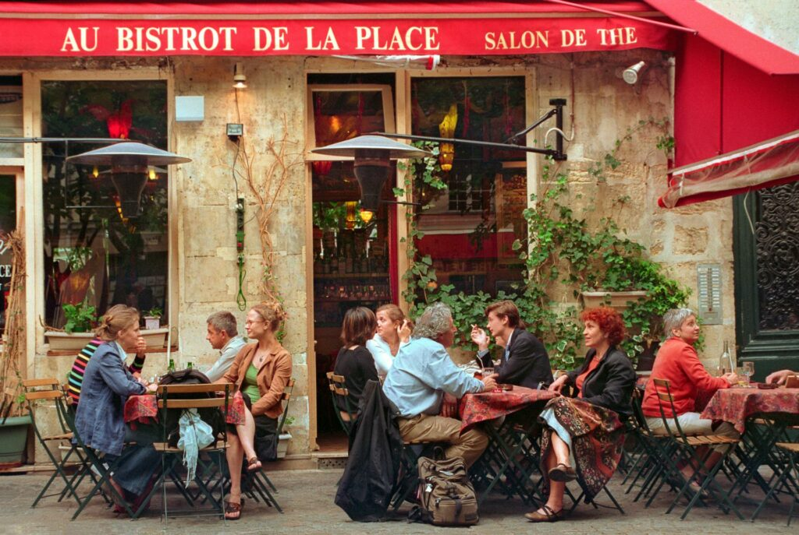

French culture is one of the most influential in the world, having shaped European civilization for centuries and left its mark on art, literature, philosophy, fashion, cinema, and the culinary arts across the globe. France has nurtured some of history's greatest minds — from Voltaire and Rousseau to Monet, Rodin, and Cézanne — and continues to be a world leader in culture, creativity, and intellectual life.
At the heart of French culture is a deep appreciation for beauty, quality, and the art of living well — what the French call "art de vivre." This philosophy pervades every aspect of French daily life, from the careful preparation of a meal to the design of everyday objects, the architecture of villages, and the rhythm of social gatherings.
France gave birth to Impressionism, Fauvism, and Cubism. Artists like Monet, Renoir, Matisse, and Picasso (who worked in Paris) transformed the art world.
French literature has produced immortal works from Victor Hugo, Marcel Proust, and Albert Camus to Simone de Beauvoir — shaping thought and storytelling worldwide.
The Lumière Brothers invented cinema in Lyon in 1895. France's New Wave movement later revolutionized filmmaking with directors like Godard and Truffaut.
Paris has been the undisputed capital of world fashion since the 17th century. Houses like Chanel, Dior, Louis Vuitton, and Hermès define global luxury style.
From Gothic cathedrals and Renaissance châteaux to Baron Haussmann's Paris boulevards and modern landmarks, France's architectural heritage is unparalleled.
Opera, ballet, and theatre thrive in France. The Paris Opera Ballet is one of the world's oldest and most prestigious companies, founded by Louis XIV in 1661.